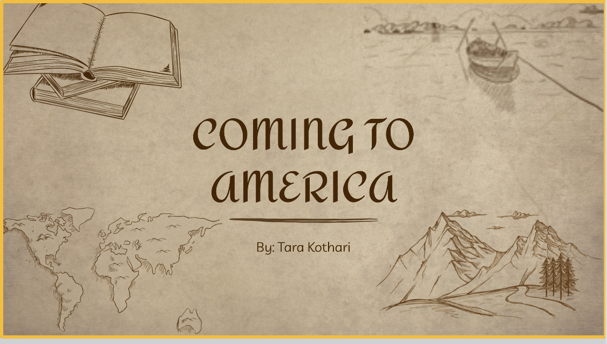
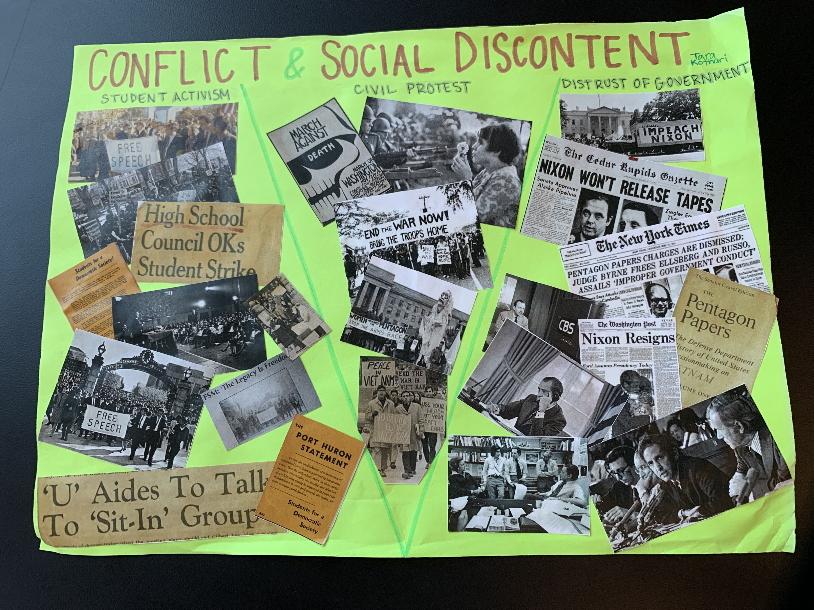

<!DOCTYPE html>
<html lang="en">
  <head>
    <title>This text appears in the tab</title>
    <link rel="stylesheet" href="style.css">
  </head>

</html>
<!DOCTYPE html>
<html lang="en">
  <head>
    <title>Projects!</title>
    <link rel="stylesheet" href="style.css">

    <div class = "topnav">
    	<a href="index.html">Home</a>
    	<a href="aboutme.html">About Me </a>
    	<a class="active" href="#projects.html">Projects</a>
    </div>
  </head>
  <body class="b">

    <h1>My Projects!</h1>
    
    <p class="p">This project was one I did earlier this year for my History class. I made a slideshow desribing my family lineage and how we ended up in America and Piedmont itself. I had to interview my grandparents and ask other relatives for any information they had on my ancestors. I learned about my great grandparents and their lives. This project was meaningful because it helped me better understand the history that led to my own life.
    </p>
    
    <p class="p">This project was on I completed this week for my History class. The assignment was to research three themes in the United States during the Vietnam war. I cut out pictures I found online and made collages. I separated the paper into three sections, each pertaining to one of the other themes. This project was nice because it incorperated art with academics. We also had to write three paragraphs explaining each theme we researched. 
    </p>
  </body>
</html>
